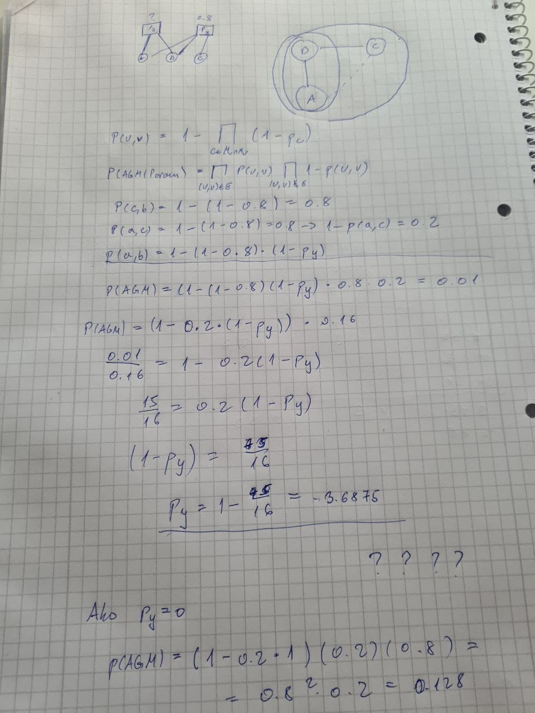

Cyric223

evo mog rjesenja… istog ces naci i u doc-u na materijalima. dobije se negativna vjerovatnost koja nema pretjeranog smisla. malo sam razmisljao o tome i sudeci po formulama izgleda da vjerovatnosti u ovom modelu nisu jako intuitivne… izgleda ako je py i 0, model se ponasa kao i da ne postoji i uzima samo x. radije, moguce je samo poboljsati vjerovatnost veze ako se preklapaju entiteti. ovo se zapravo vidi iz formule za p(u,v). gotovo mi se cini da je asistent samo nasrao neku brojku ocekivajuci da je moguca ta vjerovatnost, a sudeci po ovom doslovno nije. sa px=0.8, najmanja moguca vjerojatnost ovog AGM-a je gotovo 13% bez obzira na py. to jest ako je formula dobra, a zasad nisam nasao razloga zasto ne bi bila 😞